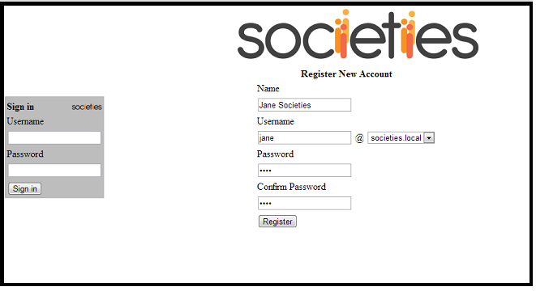
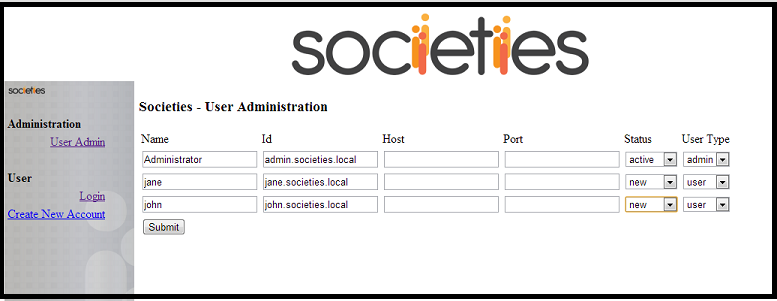

Introduction
The below steps will allow you to create openfire user accounts. These accounts will be registered with the domain authority node, so after some administration of these accounts ( described below), the user will be able to log onto their Societies account using their openfire credentials and automatically be re-directed to their container's Societies Web Application
Assumption
This article is written with the assumption that the reader already knows how to configure and run mutiple virgo containers. It is also based on the assumption that we have the following configuration: Domain Authority Node (admin.ict-societies.eu) running in container A ( config using tomcat port 8080) User Container for Jane (jane.ict-societies.eu) running in container B ( config1 using tomcat port 18080) User Container for John (john.ict-societies.eu) running in container C ( config2 using tomcat port 28080) This configuration is not necessary to be set up in this way, but it is worth keeping in mind when reading the instructions below.
Please note: the user accounts here can be different and changed in the relevant properties file of each container, i.e. VIRGO_HOME/config*/org.socities.platform.properties
Installing Societies Plugin to Openfire
Download plugin from https://maven.ict-societies.eu/nexus/content/repositories/thirdparty/org/societies/da/openfire/plugin/societies-openfire-plugin/0.1/societies-openfire-plugin-0.1.jar
Copy the societies-openfire-plugin jar into your openfire plugin directory
Restart openfire
Run the Domain Authority Node
In order to create the openfire account the domain authoity node container needs to be running.
Creating Openfire Accounts
Once the domain authority node has started sucessfully open the following address in your webbrowser http://localhost:8080/societies-platform/index.html
please note: 'societies.local' should be replaced with 'ict-societies.eu'

Enter the details of the openfire user account that you would like to create. For this example, we are creating an account for Jane Societies, running on a container with the openfire address jane.ict-socities.eu
Create another account for John using the same form
We have now created the openfire account for both Jane and John, and created skeleton societies account details in the Domain Authority node. We now need to complete the account setup on the domain authority node before the user can access their container's webapp.
Completing Account Setup
Open the following address in your webbrowser http://localhost:8080/societies-platform/adminlogin.html
Log on to the administrator account with the default admin account details
Username : Administrator
Password : Administrator
You will see the following screen (please note: 'societies.local' should be replaced with 'ict-societies.eu')

We need to tell the domain authority node what tomcat ports these user containers are running on.
The only fields we need to change on this screen are Host, Port and Status
For Jane, we enter the following details:
Under the host field we enter localhost
In the port field we enter 18080
In the status field we select Active
For John, we enter the following details:
Under the host field we enter localhost
In the port field we enter 28080
In the status field we select Active
please note: 'societies.local' should be replaced with 'ict-societies.eu'

Press submit
The openfire and socieites account setup is now complete
You should now start Jane and John's virgo containers if they are not already running.
User Log On
Direct users to the following address
http://localhost:8080/societies-platform/
The user should log on using their openfire details.
Once openfire has validated their details, the user will be directed to their containers webapp.